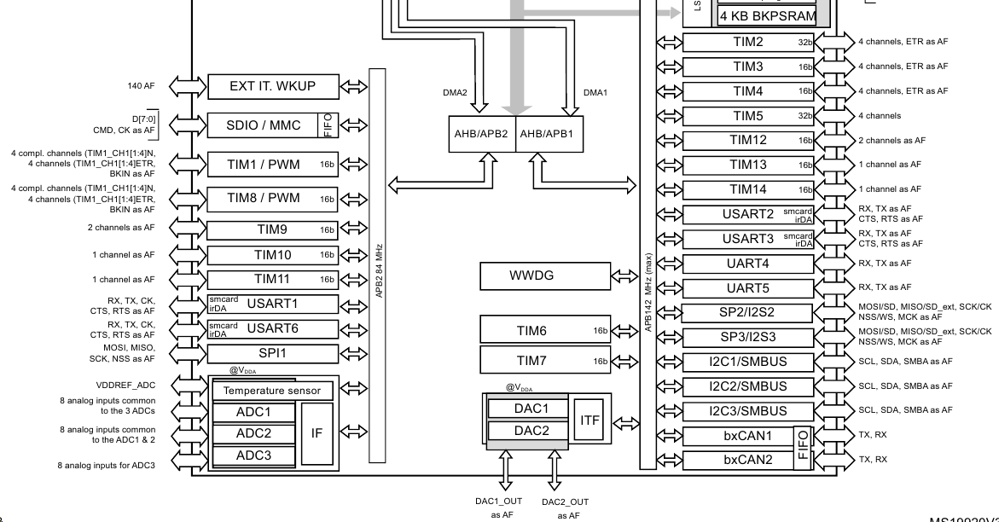
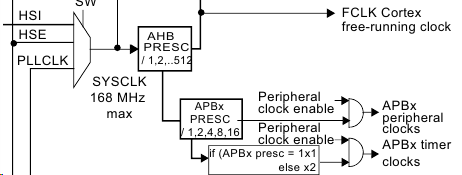
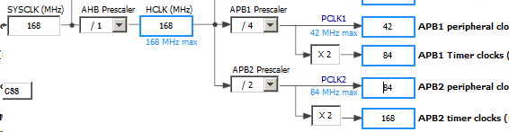

Таймеры тактируются от определенных шин согласно схемы:

Но! Частота тактирования таймера может удваиваться, в зависимости от делителя APBx:

Наглядно для конкретных частот можно увидеть в CubeMX:
